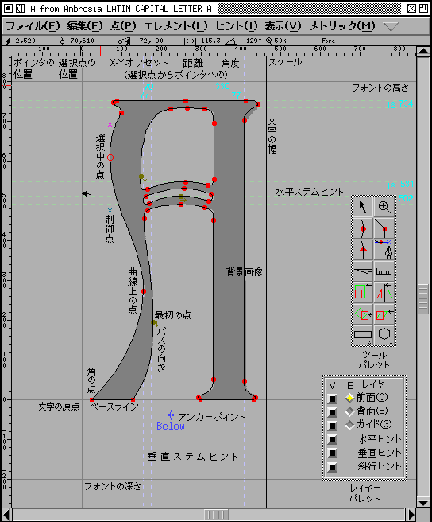

アウトライングリフビュー

アウトライングリフビューは、編集作業のほとんどが行われるウィンドウです。
ウィンドウの上部、メニューバーの直下にあるのは情報表示欄です。最初の項目は (グリフの内部座標系に換算した) マウスポインタの位置です。選択された点が 1 個だけの場合、2 番目の項目にその位置が表示され、その次の 3 項目は左から順に、選択された点から現在位置までのオフセット、選択された点からの距離および水平方向から (反時計周りに計って) 見た角度です。その後ろに現在の拡大率と、どのレイヤがアクティブになっているかの表示が来ます。最後に (デバッグ用ビューでは) 命令ポインタが‘fpgm’の‘prep’プログラムであるグリフプログラムのどこにあるかを示しています。
情報欄の下にあるのはものさしで、現在のポインタ位置がどこにあるかをその上に赤い線で示しています。左側にも同じようなものさしがあります。
その下にはグリフそのものがあります。スクリーンの左端には x=0 の線を示す灰色の線があり、そのずっと右には、現在設定されているグリフの幅の位置に黒い線が引かれています。アセント (フォントの高さ)、ディセント (深さ) とベースラインも灰色の線で示されています。
背景画像と背景スプラインは灰色で描画されています。グリッド線もまた灰色で描画されています。垂直ヒント領域は水色で、水平ヒントは薄緑色で描画されています。ヒントが重なり合っているときは、境界線は藍色で描画されています。
グリフを構成する点には 3 つのタイプがあります。角の点は塗りつぶされた正方形で、曲線上の点は塗りつぶされた円で、そして (曲線と直線の) 接点は塗りつぶされた三角形で表されます。点が選択されたときには白抜きの正方形・円・三角形になり、隣接する制御点がマゼンタと鈍いシアンの×印として、同じ色の直線の端に表示されます (曲線上の点の場合、制御点はちょうど反対方向になります)。（「次」の制御点が鈍いシアンで、前の制御点がマゼンタになります)。
 TrueType フォントでは、曲線上の点が 2 個の制御点の中点にあるときは、暗黙の位置指定を行うことができます。FontForge はそれらの点を開いた円として描画します。
TrueType フォントでは、曲線上の点が 2 個の制御点の中点にあるときは、暗黙の位置指定を行うことができます。FontForge はそれらの点を開いた円として描画します。
輪郭の最初の点は緑色で描かれ、そのそばに輪郭の進行方向を示す小さな矢印が表示されます。
 スプラインの (水平・垂直に) 極大な点がどこかを知ることが重要であることがときどきあります。(PostScript では全てのスプラインに、極大値となる場所に点が置かれていることが望ましいとしています)。
これが必要な場合は、
スプラインの (水平・垂直に) 極大な点がどこかを知ることが重要であることがときどきあります。(PostScript では全てのスプラインに、極大値となる場所に点が置かれていることが望ましいとしています)。
これが必要な場合は、表示(V) メニューで 極大点を表示(M) フラグをオンにしてください。これを行うと、極値にあたる点が鈍い紫色で表示されます。また、中間にある極大値も同時に表示されます。
それに加えて、パレットが 2 個あります。片方はどのレイヤが表示されるかを制御することができるレイヤパレットで、もう片方は編集ツールを選択することができるツールパレットです。これらは通常はそれぞれ自由に動かすことができますが、表示(V)→パレット(P)→パレットを連結表示(D) によって、ウィンドウ内に埋め込まれるように変更できます。
編集ツールは、ツールパレットの対応するボタンを押して選択することも可能ですし、右のマウスボタンを押してポップアップメニューからツールを選択することもできます (こちらのメニューでは、レイヤー変更やその他二、三の操作が可能です)。同時に、4 種類の異なる操作のツールを結びつけ可能です (これは面倒なだけで役に立たないかもしれません)。左マウスボタンにはツール操作が結びつけられていて、プログラムのアイドル時にはこのツールが表示されるでしょう。Control キーを押したときには、別のツールが使用可能で、デフォルトではポインタツールとなっていますが、Control キーを押しながらツールパレットをクリックすると、別の物を選ぶことができます。マウスの中ボタンを押したときには 3 番目のツールを使用できます (デフォルトでは虫めがねです)。Control キーを押しながら中ボタンを押すと 4 番目を (ものさしから) 切替えることができます。
マウスポインタの近く (約 2, 3 ピクセル以内) に点があるときにマウスボタンを押すと、その点がある位置でマウスを押したのと同じ効果になります。
フォントビューからグリフをドラッグしてグリフビューに置くと、FontForge はその文字への参照をビュー上に配置します。
警告: 編集中のグリフに TrueType 命令が含まれている場合、グリフ編集時にそれらの命令が非常に奇妙なふるまいをもたらすことがあります。TrueType の点の照合に依存するアンカーポイントがグリフに含まれている場合、そのグリフを編集することにより点の関連が途切れる可能性があります。編集中のグリフが、点の照合により参照の位置指定を行う他のグリフへの参照として使用されている場合、そのグリフを編集するとそれらの参照の位置が変更される可能性があります。
レイヤ
 アウトラインビューには幾つかのレイヤがあり、それらのうちの 3 つが編集可能です。各レイヤには (それを表示するかしないかの) チェックボックスがあり、編集可能なレイヤには、(そのレイヤが表示可能であるかを示す) ラジオボタン がついています。
アウトラインビューには幾つかのレイヤがあり、それらのうちの 3 つが編集可能です。各レイヤには (それを表示するかしないかの) チェックボックスがあり、編集可能なレイヤには、(そのレイヤが表示可能であるかを示す) ラジオボタン がついています。
編集可能なレイヤを変更するのには、表示されている短縮文字を入力することによっても可能です (マウスフォーカスがレイヤウィンドウにない場合でも使えます)。
いちばん上にあるのが前面レイヤで、ここにはグリフを実際に構成し、フォントに出力されるスプラインが含まれます。
2 番目は背面レイヤで、ここには背景画像とスプラインが含まれます。これらはフォントには書き出されませんが、グリフのアウトラインをトレースする作業の助けになります。画像を背面に貼りつけることも可能です。MIME タイプによる選択が可能な画像操作プログラムがある場合、画像を背面に貼りつけることもできます (KDE ファミリーのアプリケーションはこれを行いますし、多分他にもあるでしょう)。このとき、FontForge は“image/png”または“image/bmp”のどちらかで画像を読み出すことができます。
TrueType のデバッグ (ヒント(H)→デバッグ(D)) や、アウトラインのグリッド合わせ (
表示(DV) を行っている時、グリッド合わせを行ったアウトラインの表示の有無はレイヤの表示の有無によって切り替えることができます。
→グリッド合わせを表示(G)
第 3 のレイヤはガイドライン/スプラインの集まりです。これはフォント内の全てのグリフで共通に使用されます。最初から表示されているのは少数しかありません (x=0 の線、アセント、ディセントとベースラインです)。その他の助けになる線はフォントの x ハイト、キャップハイト、アセンダハイト、ディセンダハイト等があります。その他のレイヤのどれかで作業をしているとき、ポインタはこのレイヤに置かれた線に吸着します (例えば、x ハイトを一定値に強制的に揃えたいときなどに役立ちます)。
その下の 4 つの項目は、このグリフに対するどのヒントが表示されるかを制御します。
ほとんどのヒントは ヒント(H)→自動ヒント(A) コマンドで作成でき、ヒントが存在するとラスタライズを改善することがあります。項目 Blue値 は BlueValues 領域を表示します。これらは エレメント(L)→フォント情報(F)...→[PS Private辞書] で表示できます。(斜交ヒントレイヤは現在使用されていません。私見では、それが使用できれば TrueType のデバッグに有益だとは思いますが、現時点ではまだ使用可能になっていません)。
項目 アンカー はアンカーポイントを表示するかどうかを制御します。
最後の 2 個の項目はグリフの横書き/縦書きメトリックを表示するかどうかを制御します。ラテン (キリル・ギリシャ・ヘブライ・アラビア等) 文字のフォントを編集するときは、一般に横書き用のメトリックのみが存在します。中国語・日本語・韓国語のフォントは横書きと縦書きの両方のメトリックが必要です。デフォルトでは縦書きメトリックは使用しないように設定されているので、これを変更したい場合はエレメント(L)→フォント情報(F)...→[一般] を使用してください。
ツール
 編集ツールは 18 種類あり、そのうちの 2 つ (長方形/楕円と多角形/星形) はそれぞれ 2 種類の形があります。
編集ツールは 18 種類あり、そのうちの 2 つ (長方形/楕円と多角形/星形) はそれぞれ 2 種類の形があります。
パレットの一番下にはマウスボタンの現在の機能割り当ての一覧が表示されています。この図では、マウスボタン 1 はポインタツールに割り当てられていて、Control キー + マウスボタン 1 も同じくポインタに、マウスボタン 2 は拡大ツールに、Controlキー + マウスボタン 2 はものさしツールに割り当てられています。
多くのツールは、Shift または Alt (Meta) キーを押しながら選択した場合には通常と異なる挙動を示します。Mac には Alt/Meta キーは存在せず、Option キーと Command キーは 1 ボタンマウスを 3 ボタンマウスに見せかけるために使われるのが普通です。そこで FontForge は Mac ではAlt/Meta の代わりに CapsLock キーを使用します。
 ポインタツール
ポインタツール
このツールは点、画像や参照されたグリフを選択するのに使用します。これを使用して、それらを動かしたり画像や参照されたグリフを拡大/縮小することもできます。
現在編集可能なレイヤに置かれている物だけが選択・編集・拡大/縮小することができます。
選択されていない点の上で単純にクリックするとその点が選択され、その時選択されていた物は全て選択解除されます。Shift キーを押しながらクリックするとその点が選択されているかいないかの状態を反転します。ダブルクリックすると、その点を含むパス上の全ての点を選択します。トリプルクリックすると、レイヤ上の全ての物を選択します。何もない場所を選択し、ドラッグするとその領域の長方形に含まれる全ての物を選択します。直線や曲線の上で選択を行うと、その点の両側にある直線または曲線の端点を選択します。(画像を含むレイヤにいる時に) 画像の暗い部分をクリックすると画像を選択します。参照された文字のアウトライン上をクリックすると参照を選択します (参照されているグリフのアウトラインとバウンディングボックスがぴったり一致しているときは、いちど選択を行い、Alt/Meta/CapsLock キーを押すと移動が行え、Meta キーを押さない状態だとサイズ変更ができます)。
ある点に属する制御点が表示されていないときは、制御点はその点自身と重なる位置にあります。片方の制御点を選択したい場合は、まず (制御点をアクティブにするために) 点を選択して Meta キー (Mac では caps lock キー) を押したまま、点の上でマウスボタンを押します。この状態でドラッグすると、片方の制御点が引き出せます (間違った点を選択した場合、まずその制御点を引き出した後で、もう片方の制御点を引き出すためにもう一度同じ操作を繰り返し、それから最初の制御点を戻してください)。残念ながらいくつかのウィンドウマネージャ (gnome-sawtooth など) は Meta-クリック を奪い取ってしまいます。そうなる場合は、制御点を設定するには エレメント(L)→情報を得る(I) を使う必要があります。
 制御点を移動したときには、
(
制御点を移動したときには、
(表示(V)→制御点の情報を表示(C) で) 制御点 (およびオンカーブ点の反対側の数値) に関する情報を表示するポップアップボックスを表示することができます。表示されるのは、制御点が後側か前側か、比率で表した傾き、角度および、基点と同じ側での曲率です。一番下にあるのは 2 個の曲率の差です。曲線上の点の場合、この値を 0 に近くなるようにしてみて下さい。
何かが選択されている状態のとき、それをドラッグして動かすことができます。何かを選択してマウスをドラッグすると、それと同時に選択された全ての物が移動します。開いたパスをドラッグしてその端点の 1 つが他の開いたパスと重なる場所に来た場合、2 本のパスは 1 本に融合されます (開いたパスが融合されることを避けたい場合は、Alt/Meta/CapsLock キーを押してください)。制御点をドラッグすると、その制御点が移動します (暗黙の点を定義する制御点を移動すると、暗黙の点も一緒に移動します)。
曲線を選択している場合、それをドラッグすると曲線上のマウスボタンを押した場所の位置をドラッグします (これを使って、曲線を変形することができます)。
Shift キーを押しながらドラッグすると、マウスの動きは水平・垂直か 45°方向に制限されます (制御点を移動するときに、Shift + Meta (Alt) と組み合わせてドラッグすると、制御点の基点から見た角度は移動を開始する前と同じ方向に制限されます)。
フォントに ItalicAngle が設定されていて、環境設定の項目 ItalicConstrain がオンになっている場合、移動は一般に垂直方向と角度 ItalicAngle に沿った方向に制限されます。
選択された画像や参照グリフのバウンディングボックスにマウスを持って行ってドラッグ操作を行うと、オブジェクトが拡大・縮小されます。
マウスをグリフの幅を表す線にマウスを移動してドラッグすると、現在のグリフの幅が変更されます。このグリフにビットマップが存在する場合、それらの幅も同時に更新されます。このグリフに依存する (例えば、このグリフを参照として含んでいる) グリフが存在して、そのグリフの幅が現在のグリフと同じである場合、それらの幅も更新されます (例えば、A の幅を変更すると、À, Á, Â, Ã, Ä および Å も同時に更新されることになるでしょう)。縦書き用メトリックを (それを含むフォントで) 表示しているときは、同じ方法で縦書き時の送り幅も変更できます。
選択された物を移動するために、矢印キーを使うこともできます。矢印キーを 1 回押すたびに選択範囲は 1 em ユニットだけその方向に移動します (これは、環境設定において、em ユニット単位で任意の値を指定することができます)。最後に選択したのが制御点である場合、その点が移動します。Shift キーと同時に上下の矢印キーを押すとイタリックの傾きと平行な角度に移動します (要注意です: これによって座標値は非整数になります)。Meta (Alt) キーを押すと、移動量は通常時の 10 倍になります。
矢印キーと同時に Control キーを押している場合、選択範囲を移動せずにビューをスクロールします。
グリフが合字である (そして グリフ情報 で合字を登録している場合)「合字キャレット位置」を設定することが可能です。これは本質的に、合字の各構成要素の間にキャレットが止まる位置を設定可能であるということです (これにより、ワープロは合字の各構成要素の間にキャレットを置くことが可能になります)。合字ウィンドウ内では画面を横切る一連の垂直線がキャレット位置を示しています。デフォルトではこれらの線は原点に置かれていますが、マウスポインタをそこに合わせ、ボタンを押してドラッグすればそれらを移動することができます。合字を作る方法の完全な説明については、合字の作成方法を参照してください。
 拡大ツール
拡大ツール
拡大ツールをクリックすると表示を拡大し、クリックした位置を中心に移します。Alt/Meta/CapsLock キーを押しながらクリックすると表示を縮小し、クリックした位置を中心に移します。先にも述べたとおり、ウィンドウマネージャの中には Meta クリックを奪い取るものがあるので、そのばあい縮小には 表示(V) メニューの 縮小(O) を使う必要があるでしょう。
このツールを使って長方形を描くと、マウスを離した時に FontForge はその長方形がウィンドウにちょうど収まるようにビューの拡大・縮小と移動を行います。
スクロールホイールつきのマウスで Control キーを押しながらホイールを回すと、ウィンドウを拡大・縮小することができます。
 スクロールツール
スクロールツール
このツールを使えば、スクロールバーを使わずにウィンドウをスクロールすることができます。

 フリーハンドツール
フリーハンドツール
このツールを使うと自由曲線を描くことができ、FontForge はそれをスプラインの集合に変換しようと試みます。 Alt/Meta/CapsLock キーを押して線を描くと、FontForge はマウスを離した時に曲線を閉じます。
ツールパレットのアイコンをダブルクリックすると、エレメント(L)→輪郭を太らせる(E) とよく似たダイアログが表示され、そのダイアログでより詳細な調節を結果に対して行うことができます。以下の選択が可能です:
- 画面に描いたパスを出力とする
- 大きなボールをもつボールペンを使って描いたときに塗りつぶされることになる領域を出力とする
- カリグラフィ用の平ペンを使って描いたときに塗りつぶされることになる領域を出力とする
ワコムのタブレットを持っているならば、それらのペンを、筆圧に依存して太さが変化するように設定することが可能です。単純に、2 個の箱の中で、対応するペンのサイズ (ストロークの幅) に適した筆圧をかけて線を引くだけでの作業です。


 曲線上の点・角の点および曲線と直線の接続点を追加するツール
曲線上の点・角の点および曲線と直線の接続点を追加するツール
これらの 3 種類のツールは、ビューに追加される点の種類が異なる点を除いては全く同じように振舞います。
点が 1 個だけ選択されていて、その選択点がパスの端にある時に、マウスボタンを押すと、ボタンを押した位置に新しい点が作成され、選択点から新しい点に向けてスプラインが作成されます。 この新しい位置がパスの終端ならば、2 本のパスは併合されます (または、この位置が現在のパスの端点である場合、パスは閉じられます)。
それ以外の状態で、スプラインの上でマウスボタンを押すと、スプラインの上に点が追加されます。
それ以外の場所では、どのパスにも所属しない新しい点が、マウスをクリックした場所に 1 個作成されます。
点がひとたび作成されると、それは選択された状態になり、それまでの全ての選択は解除されます。この点はドラッグして移動することができます。この点が開いたパスの端点で、もう 1 つの開いたパスの端点の上にドラッグすると、 2 本のパスは併合します。
ダブルクリックすると、上記の方法で点が追加されてから 点の情報 ダイアログが表示され、これを使用するとこの点とそれに隣接する制御点の位置を精密に調整できます。
 ペンツール
ペンツール
このツールは 3 次曲線と 2 次曲線の編集で異なったふるまいをします。これは多くの面で前述の諸ツールに類似しており、現在のスプラインに点を付け加えます。
3 次フォントで画面上をクリックすると、曲線上の点が作成されます。クリック時の初期状態では、制御点はその点と同位置に置かれ、その後ドラッグすると点そのものではなく制御点をドラッグした位置に移動します。
2 次フォントでは、最後の制御点と現在位置 (これが次の制御点となります) の中間点に端点が作成されます。
Alt キー (または Meta キーその他) を押すとこのふるまいが変わるので、3 次フォントを編集中に 2 次フォントと同様の編集操作ができますし、その逆も可能です。
 ナイフツール
ナイフツール
このツールはスプラインを切断するのに使用します。ビュー上でマウスをドラッグすると、FontForge はどこでパスを切断するかを示す直線を描きます。マウスを離すと、それに交差する全てのスプラインが切断されます—つまり、この線が交差する場所に、各スプラインは 2 個の点を追加し、古いスプラインはこれら 2 個の点をそれぞれ新しい端点とする連なり合ったスプラインに切断されます。これらの端点は連結していないので、現在の状態では開いたパスになっています (または、元から開いたパスだった場合、このパスは 2 個に分割されます。)
 ものさしツール
ものさしツール
 このツールはマウスの現在位置を表示します。マウスがアウトラインに近い位置にある時、そこでの傾きと曲率を表示します。マウスがアウトライン上にある点の近くにある時、点の両側での傾きと曲率を表示します。
このツールはマウスの現在位置を表示します。マウスがアウトラインに近い位置にある時、そこでの傾きと曲率を表示します。マウスがアウトライン上にある点の近くにある時、点の両側での傾きと曲率を表示します。
ボタンを押してドラッグすると、現在のマウス位置までの x, y 両方向のオフセット、距離と角度を通知します。スプラインの端点でマウスボタンを押してもう片方の端点へ持って行ったときには、そのスプラインの長さも表示します。
Meta/Alt/CapsLock キーを押している場合、マウスボタンを押した時だけ情報を表示します。
最後に、Meta/Alt/CapsLock キーを押したままでマウスボタンを離すと、ウィンドウを再度クリックするか、新たにものさしツールでドラッグ操作を行うまでものさしウィンドウが画面上に表示され続けます。
 拡大・縮小ツール
拡大・縮小ツール
このツールを使うと、選択範囲の拡大・縮小を数値入力を使わずに目で見て行うことができます (何も選択されていないときには、現在のレイヤ上の全ての物が拡大・縮小されます)。マウスを押した位置が変形の原点となり、右と上への移動はそれぞれの軸方向への拡大となります。拡大・縮小を一様にするか片方の軸方向のみに限定したい場合は、Shift キーを押しながら操作してください。
このツールでダブルクリックすると、[拡大・縮小...] オプションを選択した状態で変形ダイアログを起動します。
 反転ツール
反転ツール
このツールを使うと、選択範囲を水平または垂直に裏返すことができます。この場合も、マウスをクリックした場所が変形の中心となります。
このツールでダブルクリックすると、[反転...] オプションを選択した状態で変形ダイアログを起動します。
注意: アウトラインを裏返した後で、ほぼ確実に エレメント(L)→アウトラインの向きを修正(C) を適用する必要があるでしょう。
 回転ツール
回転ツール
このツールを使うと、選択範囲を自由に回転することができます。
このツールでダブルクリックすると [回転...] オプションを選択した状態で変形ダイアログを起動します。
 傾きツール
傾きツール
このツールを使うと、選択範囲に傾きを加えることができます。
このツールでダブルクリックすると、[傾き...] オプションを選択した状態で変形ダイアログを起動します。
 3 次元回転ツール
3 次元回転ツール
このツールを使うと、選択範囲を 3 次元空間の中で回転して、その結果を x-y 平面に投影した結果を得ることができます。マウスを押した位置から現在の位置に向けて想像上の線が引かれます。この線が回転軸を定めます。最初にマウスボタンを押した時からの移動量が回転量を決定します。
このツールでダブルクリックすると、[3次元の回転...] オプションを選択した状態で変形ダイアログを起動します。

 透視変換ツール
透視変換ツール
このツールを使うと、選択範囲に透視変換 (これは非線形変換の一種です) を適用することができます。 このツールは 3 個の点を使用します: グリフの原点、マウスを押した位置、そしてカーソルの現在位置です。 右の図では、グリフの送り幅付近のベースライン上でマウスを押し始め、それからマウスを図の上中央へ移動してから離しています。 それにより離した点があたかも無限遠にあるかのように変換されます。 原点とマウスを押した点との間の直線が、1 本の変換軸を定めます。 この線に直行する方向の距離は保たれ、この線に平行な距離は以下のように変換されます。
x' = release_x + (release_y - y)/release_y * ( x - release_x )
y' = y

 長方形/楕円ツール
長方形/楕円ツール
このツールは初期状態では長方形を作成しますが、ツールパレットをシングルクリックすると長方形ツールと楕円ツールの切り替えを行い、ツールパレットでダブルクリックすると、描画する長方形の角を丸めて描画するかどうか、また、どのようにして長方形と楕円を指定するかを設定できるダイアログが現れます。
長方形 (または楕円) がマウスを押した位置と離した位置の内側に描かれるか (外接長方形を指定)、マウスを押した点を長方形の中心に、離した点を頂点の 1 つにして描かれるか (中心と四隅を指定) のどちらかを選ぶことができます。
より詳細な制御が必要な場合、グリフビューでダブルクリックし、長方形/楕円を置く位置、その大きさおよびそれを回転するかを数値的に定義することができるダイアログを表示します。

 多角形/星形ツール
多角形/星形ツール
このツールは初期状態では通常の多角形を描画しますが、ツールパレット上のボタンをダブルクリックすると、星形を描くことができ、また、多角形の変の数を選択できます。
多角形は、マウスを押した点を中心にして、中心からマウスを離した位置までの距離を半径とする円に内接する正多角形として描かれます。 多角形の頂点の 1 つはマウスを離した点に置かれます。
星形も同様にして描くことができます。描かれるのは、通常の多角形から導出される星形です。多角形の頂点の数が近付くにつれ、星型は円に近づいてきます。この理由により、ダイアログボックスでは頂点の数を選べるだけではなく、星の頂点が多角形に外接する基準円からどれだけ突き出るかを選ぶことができます (これにより正規化されていない星が出来上がりますが、この方がそれらしく見えるでしょう)。
縦書きビュー
 このビューでは、グリフの縦書きメトリックが表示されます。縦書き時の送り幅を、グリフの横幅を変更するのと同様の手順で (ポインタツールを選択し、縦書き時の送り幅を表す線を上下に移動することによって) 変更することができます。
このビューでは、グリフの縦書きメトリックが表示されます。縦書き時の送り幅を、グリフの横幅を変更するのと同様の手順で (ポインタツールを選択し、縦書き時の送り幅を表す線を上下に移動することによって) 変更することができます。
グリッド合わせビュー
 FreeType ライブラリがインストールされているならば、作成中のグリフをラスタライズした結果を見ることができます。FreeType のバイトコードインタプリタが使用可能になっているなら、グリフ内の TrueType 命令が点を移動するのを見ることができます (バイトコードインタプリタが利用できない場合、FreeType の自動ヒントづけルーチンが点を移動します)。このモードは
FreeType ライブラリがインストールされているならば、作成中のグリフをラスタライズした結果を見ることができます。FreeType のバイトコードインタプリタが使用可能になっているなら、グリフ内の TrueType 命令が点を移動するのを見ることができます (バイトコードインタプリタが利用できない場合、FreeType の自動ヒントづけルーチンが点を移動します)。このモードは 表示(V)→グリッド合わせを表示(W) で起動することができます。
グリッド合わせを表示(W) コマンドは、最初に基本的な情報を質問します。望み通りの動作を行うためには、ポイントサイズと解像度を知らなければなりません (右の例では 72dpi の画面で 12pt 表示します)

 デバッグビュー
デバッグビュー
FontForge は TrueType デバッガを内蔵しています——バイトコードインタプリタを利用可能なバージョンの FreeType がインストールされている場合に限ります。(注意: これを利用可能にするには、Apple からライセンスを得る必要があります。これは幾つかの特許で保護されています)。
右の図はこのモードの例を示しています。ヒント(I)→デバッグ(D) でこれを起動し、グリッド合わせビューと同様にポイントサイズと解像度を確定する必要があります。このビューは 2 個のペーンに分かれています。左は上のグリッド合わせビューに似ています (ただし、命令をステップ実行すると表示が変わる点が異なります)。右のペーンは実行される命令をリスト表示します。
グリフ上の全ての点が表示されている他に、2 個か 4 個の追加の点があります。 これらは「ファントムポイント」と呼ばれるもので、グリフの水平および垂直メトリックを表します (古いバージョンの FreeType は 2 個の点しか表示しません——左サイドベアリングと送り幅です。最近のバージョンは上サイドベアリングと縦書きの送り幅も表示します)。
命令ビューの上部にはボタンが並んでいます。 最初のボタンは TrueType プログラムを 1 ステップ実行します (step into)。 2 番目のボタンは関数呼び出しを一度に実行します。 3 番目はブレークポイントを現在の関数の脱出箇所に設定し、そこに行きあたるまで実行を続けます。 そして、4 番目は以下の条件を満たすまで実行を続けます:
- ブレークポイントに行き当った
- ウォッチポイントに行き当った
- グリフプログラムの最後に到達した
- エラーが発生した
“STOPPED”と描かれた赤い矢印は命令ポインタの現在の位置を示します (そこにある命令が次に実行されます)。
5 番目のボタンを使うとウォッチポイントを設定することができます。1 個の点 (またはいくつかの点) を左側のペーンで選択してから、このボタンを押してください。その後、この点が移動したときはいつでも FontForge はグリフプログラムを停止します。
制限: FontForge では、1 個の制御点しか選ぶことができません (カーブ上の点は複数選べますが、制御点は 1 個だけです) ので、現在のところ複数の制御点を監視の対象とすることはできません。
命令語の上でクリックすることにより、通常のブレークポイントを設定することができます。小さな赤い〔STOP〕標識がアドレスエリアの上に出現し、命令ポインタがこの命令に到達したときはいつでも、プログラムは停止します。命令語の上で再度クリックすると、ブレークポイントは削除されます。
制限: 現在のところ現在の関数 (またはグリフ) の外側の位置にブレークポイントを設定する方法はありません。
制限: 現在のところ呼び出しスタックを検査する方法はありません。
6 番目のボタンは各種のデバッグパレットのどれを表示するかを制御できるメニューを表示します。使用可能なメニューの一覧は以下のとおりです: レジスタ、スタック、点、ストレージ、ラスタおよび注記です。
 |
 |
 |
| TrueType のグラフィック状態を表示する | TrueType のスタックを表示する。括弧内の値は整数部 26 ビット、少数部 6 ビットの固定小数です。 | 点を表示する。トワイライトポイントを表示するか、グリフペーンで表示される点 (通常の点) を表示するかを選択可能です。現在の位置または元の位置を表示することができます。単位は、現在のグリッドのユニット数か em ユニットを選択可能です。
複合グリフをデバッグ中、現在の点または部品に (複合グリフ内のどこに置けばよいかを見るために) 変形を適用しているか、(部品が元のグリフでどう見えるかを確かめるために) 変形を適用していないか (命令が実行途中の場合はこちらになります) は 点には幾つかのフラグを付随させることができます。‘P’は点が曲線上の点であることを表す印であり、‘C’は点が曲線外の点 (制御点) であることを,‘I’は点が 2 個の制御点の内挿により配置されたカーブ上の点であることを、‘F’はファントムポイントを、‘T’はトワイライトポイントを、‘H’は水平タッチフラグが設定されていることを、‘V’は垂直タッチフラグが設定されていることを、‘W’はウォッチポイントが設定されていることをそれぞれ表します。 輪郭同士は水平線で区切られています。 |
 |
 |
 |
| TrueType 記憶領域の各位置を表示します。 | cvt 配列の現在の値を表示します。 | 現在のラスタライズ結果を実寸で表示します。 |
|
| このウィンドウは、現在の命令に対する注記を提供しようと試みます。差異上部の 2, 3 行に命令の簡単な説明を表示し、その下に、どのレジスタを使用するかとそれらの値を表示します。スタックをどのように使用するかを表示し、スタック上のデータの解析を試みます。最後に、どのレジスタに値が代入されるか、また、スタック上にどのようなデータが置かれるかを説明します。 |

最後のボタンはデバッガを終了します。
デバッガは、多くのデバッグに共通した以下の 1 文字コマンドに反応します:
| s | ステップ実行 |
| n | 1 単位実行 (次へ) |
| c | 実行継続 |
| r | (同じグリッドで) 再実行 |
| f | 末尾まで実行 (ルーチンを抜ける) |
| k | デバッガを強制終了 |
| q | デバッガを強制終了 |
ヒント(I)→デバッグ(D) メニューコマンドは、デバッガの終了 (「デバッグ」チェックボックスをオフにします) またはポイントサイズと解像度を変更してのデバッガの再実行にも使用できます。このダイアログは fpgm と prep テーブルもデバッグの対象にするかを設定できます。通常は、このグリフに付随する命令に実行が到達した時にデバッグが開始されます。
複合グリフのデバッグ方法
FontForge は、複合グリフのデバッグ時にはあまり十分に親切ではありません——これは TrueType の動作方法の影響によるものです。例えば“Atilde”グリフをデバッグしたいとしましょう。
最初に FontForge が“A”グリフを読み込んでグリッド合わせを行う時点では、“tilde”の点は表示されず、“A”単独をデバッグしているときと全く同じです。
次に FontForge は“tilde”グリフを読み込んでグリッド合わせを行い、この時点では“A”グリフの点は見えなくなります。"tilde”の点番号は単独の“tilde”のものと同じになるでしょう ("Atilde”の本当の表現では、部品“tilde”の点の番号づけは部品“A”の点の個数ぶんだけずらされたものになります)。"tilde”は、丸めによって変な位置に現れることがあります:“tilde”はふつう平行移動を施され、この移動量はピクセルグリッドに合わせて丸められます。横幅の線は“tilde”の幅を表し、“Atilde”の幅ではありません。
最後に FontForge は複合グリフそのものに含まれる任意の命令を実行し、全ての構成部品が表示され、全ての点が正しく番号づけされます。
いくつか警告しておきます:
- ある部品または複合グリフ全体に命令が含まれていない場合、FontForge はその部分をデバッグしません (デバッグするものが無いはずですから)。
- FontForge は点のマッチングを正しく行う参照を、グリフ全体が読み込まれるまで平行移動しません。
 “A”の中間バージョンと、背景に表示した他の 2 つのスタイル |
マルチプルマスタービュー
マルチプルマスターフォントでは、MM メニューによってフォントのどのスタイルを編集しているかを制御することができます。
このメニューを使って、任意の (または全ての) 他のスタイルをバックグラウンドに表示することができます。
メニューは“MM”という名前ではありますが、これは Apple の変形可能 (distortable) フォント (Skia などの“*var”フォント) にも同様に適用されます。
複数レイヤ編集
 Type3 フォントの編集を行いたい場合、FontForge が適切に設定されていれば、FontForge はストロークと塗りつぶしの列に分解されたグリフを表示し、それらを編集することができます。
Type3 フォントの編集を行いたい場合、FontForge が適切に設定されていれば、FontForge はストロークと塗りつぶしの列に分解されたグリフを表示し、それらを編集することができます。